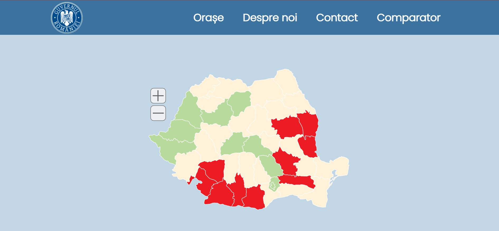
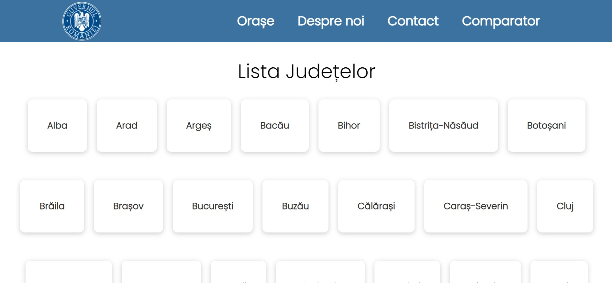
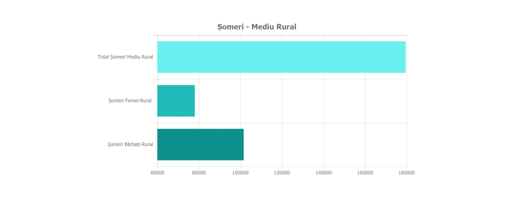
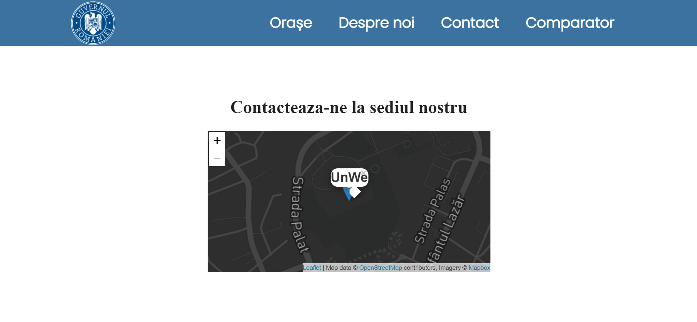
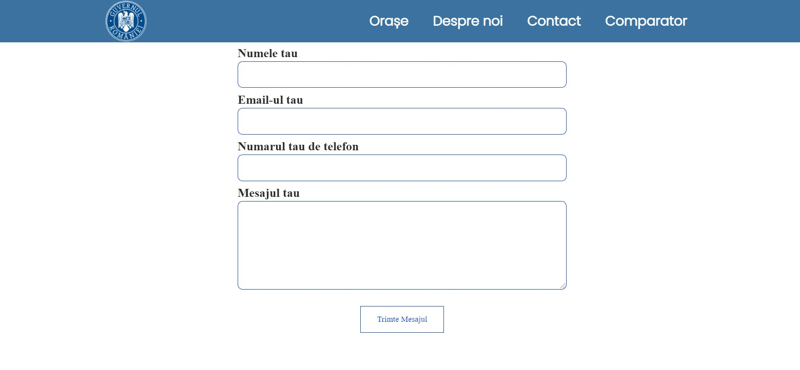
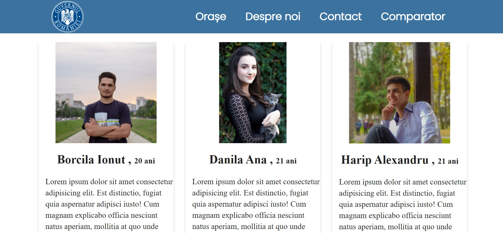
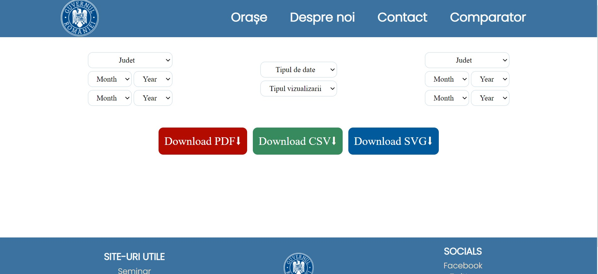
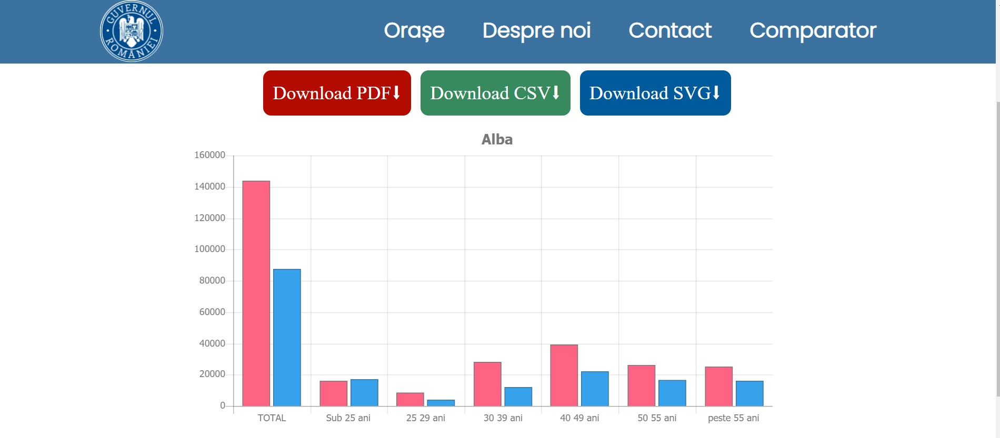
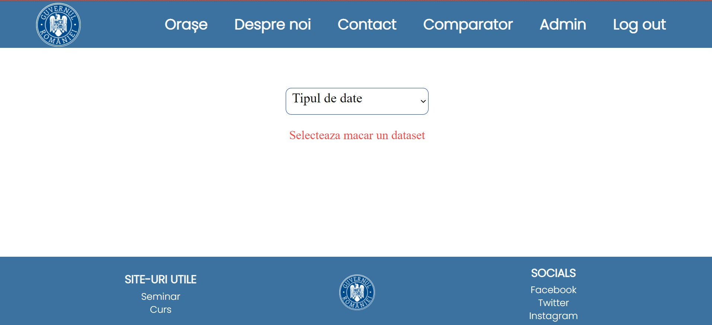
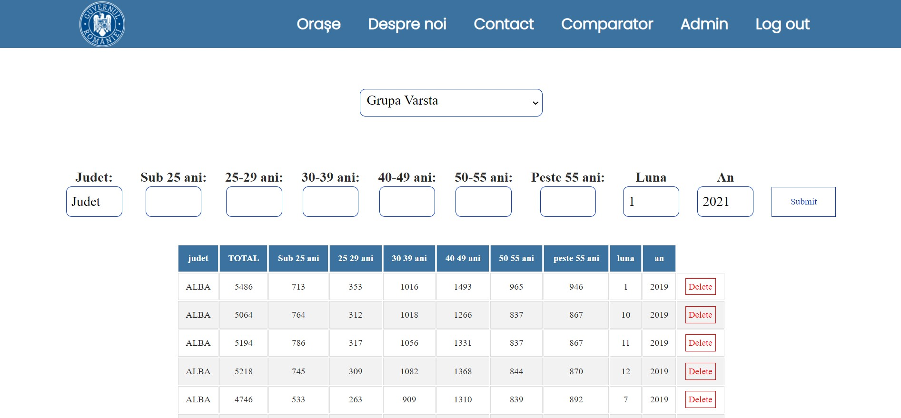

Scholarly HTML
Scopul acestui manual este de a familiariza utilizatorii cu facilitățile oferite de aplicație și modul de utilizare a acesteia. Prin acest proiect am început să lucram la o aplicație Web destinată persoanelor interesate de statisticile șomajului din România. Ne-am propus să realizăm acest instrument de vizualizare de date cât mai intuitiv și user-friendly pentru a putea fi folosit atât de persoane care utilizează zilnic tehnologia, cât și pentru persoanele care nu folosec. Statisticile sunt reprezentate sub formă de grafice, pentru a oferi o vizualizare cât mai simplă a datelor dintr-un anumit județ, într-o anumită lună sau pe o perioadă mai îndelungată.
Un utilizator când intră dată în aplicație, primul element care i se înfățișează este harta României care prin apăsarea unui județ conduce către o altă pagină unde sunt afișate graficele respectivului județ. Județele cu o rată a șomajului mare sunt colorate cu roșu, cele cu o rată mică sunt colorate cu verde, iar celelalte intră în categoria de șomaj mediu. Când utilizatorul aplicației urmează să selecteze un județ, în timpul mișcarii mouse-ului peste hartă, pentru a vedea exact ce județ este selectat acesta se colorează în albastru. Userul are posibilitatea de a mări sau micșora harta, în funcție de preferințele sale, dacă dorește să vizioneze o anumită porțiune.
Primul buton din header conduce la prima pagină pe care un utilizator o are la dispoziție. Pagina cuprinde o listă a tuturor județelor din România, aranjate în ordine alfabetică. Desfășurarea orașelor astfel în acest mod este una intuitivă și pagina devine ușor de înțeles și de folosit de către useri. Un utilizator care accesează pagina poate alege statisticile cărui județ dorește să le vizualizeze reprezentate sub formă grafică. Când utilizatorul apasă pe un numele unui județ acesta este redirecționat către pagina în care sunt afișate grafice corespunzătoare județului ales.
În această pagină sunt reprezentate graficele județului selectat de un utilizator. Pentru județul ales sunt afișate graficele pe baza criteriilor următoare: nivel de educație, grupe de vârstă, mediu, sex, îndemnizare. Graficele pot fi vizualizate toate dând scroll în pagină.
Userii aplicației pot vedea pe această pagină informații referitoare la o scurtă descriere a proiectului, o hartă, pentru a fi cunoscută locația/sediul echipei un formular prin care un utilizator poate trimite e-mail, în cazul în care are nevoie de un răspuns din partea echipei, are întrebari sau sugestii, etc.)
 Fiecare dintre cei trei membri ai echipe are: un card cu poza sa, link-urile către rețelele social media, o scurtă descriere.
Dacă un utilizator dorește să vadă graficele și statisticile a două județe în paralel pentru a putea realiza o comparare a datelor acestora, atunci accesând pagina Comparator poate realiza acest lucru. Utilizatorul are mai multe opțiuni din care poate alege realizarea comparării. Poate selecta ce județe vrea sa compare, pe ce perioade de timp, pe ce criteriu să se realizeze compararea și formatul graficului pe care îl dorește. Userul, după ce a ales criteriile pe baza cărora vrea să compare județele, poate descărca graficul însoțit de statistici în 3 formate: PDF, SVG, CSV.
 Un tip special de utilizator al aplicației este administratorul. Nu orice user are posibilitatea de a deveni administrator, de fapt nu există posibilitatea de a face cont de timp admin, acestea fiind salvate și reținute în baza de date. Astfel, numai utilizatorii care au acces la baza de date pot accesa aplicația ca admin. În plus față de un utilizator obișnuit, un administrator are dreptul de a șterge sau adăuga informații în baza de date. Vizual, aplicația diferă prin apariția în header a două Funcționalități noi Admin și Log out. Când dorește administratorul să modifice sau să vizualizeze conținutul bazei de date accesează pagina intitulată Admin, selectează criteriul pe baza căruia se vor afișa datele și în urma selecției apare un tabel cu elementele ordonate alfabetic în care se regăsesc datele pe care dorește să le vadă.
 Numai utilizitatorii cu drepturi de administrator pot vedea acestă pagină. Pe baza credențialelor salvate anterior în baza de date, un administrator se poate conecta. În cazul în care credențialele sunt greșite apare un mesaj de eroare.